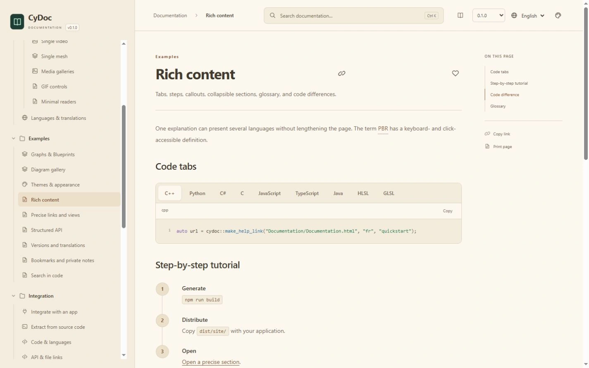
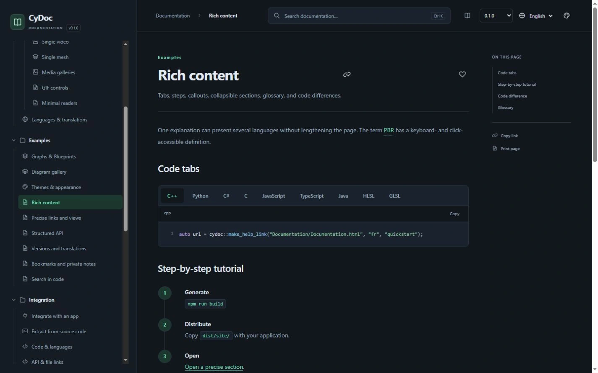

An editor for authors
Visual or Markdown writing, a page tree and a real reader preview. Work in a local folder or a shared online project.
Standalone example · Studio 0.1.2
Write, illustrate and publish your manuals with Studio. Give your users a clear, searchable reader that works from local files.
Windows x64 editor · Web editor · MIT license
FOR THE PEOPLE USING YOUR SOFTWARE
For application developers, plugin authors and teams who want their manuals to travel with their software. CyDoc brings authoring, rich content and contextual help together, while keeping the reader independent.
Visual or Markdown writing, a page tree and a real reader preview. Work in a local folder or a shared online project.
Search, a clear hierarchy, illustrations and stable links. Open Documentation.html and start reading.
A DOM-free core and optional viewers. Include the modules your manual needs, and keep help links close to each feature.
01 / CYDOC STUDIO
Draft visually, switch to Markdown for precise control, and keep the same page. Organize chapters in the tree, adjust page properties and let autosave record your changes.
Import local images, GIFs, videos and models through the media library. Configure advanced media, diagrams and graph blocks with CyDoc JSON or Markdown.
Write the English original, then complete and review its French translation. Shared IDs preserve links. Changing the original marks the translation outdated; incomplete publication is blocked.
02 / THE READER
Ship the complete manual beside your application. Open it directly through file://, embed it in a dedicated WebView, or serve the same export on a static website.
Search from the header or press Ctrl+K. Filter by content type and code language, then jump to the relevant page or section. Search stays local to the manual.
03 / OPTIONAL MEDIA MODULES
Explain a setting with an image. Compare a change. Annotate a moment or inspect a model. Every viewer is optional, and enlargement stays inside the documentation window.
Zoom, pan, draw arrows or areas, and compare two images with a draggable divider. A/B transforms remain synchronized.
Video decoding depends on the browser. The mesh viewer requires WebGL 2; Three.js is loaded only for that module.
Enable image, video, GIF, mesh, gallery and graph readers independently. The core has no runtime dependencies and does not import a media engine.
image · video · gif · mesh · gallery · graph04 / EXPLAIN THE STRUCTURE
Turn flows, decisions, sequences, classes, dependencies and architectures into SVG diagrams at build time. For interactive content, use the separate node graph viewer with typed ports and documentation links.
The graph viewer also reads a subset of Unreal Blueprint clipboard text. It displays the graph; it does not execute Blueprints or open binary .uasset files.
Explore diagrams and graphs05 / CONNECT YOUR CODE AND YOUR MANUAL
Open the relevant page and section from your app, including contextual F1 help. Stable links can also target annotations, video times, code lines, graph nodes and saved 3D views.
Keep reference material close to the code: extract annotated comments and Python docstrings, or import Doxygen XML, TypeDoc JSON and neutral API data. Publish signatures, parameters, includes and modules, without raw implementation listings.
See API and integration examplesBuild-time highlighting: C++, Python, HLSL, GLSL, C#, C, JavaScript, Java and TypeScript.
// CyDoc · contextual help
import { createLink } from 'cydoc';
const url = createLink({
locale: 'en',
pageId: 'quickstart',
anchor: 'installation'
}, './Documentation/Documentation.html');06 / APPEARANCE
Light, Dark, Midnight, Nord, Paper and High contrast. The reader remembers your choice. Studio shares all six themes across its editor, Windows shell and bundled manual.


Drag the divider to compare actual Dark and Paper captures.
07 / YOUR WORKFLOW
Open Studio on Windows and start writing. Ordinary folder projects need neither a login nor Git. The browser editor also has a loopback-only local mode.
Host the editor with accounts, invitations, owner/editor/viewer roles, live presence and simultaneous Yjs editing. Online authoring needs persistent storage, HTTPS and WebSockets on a single server.
The portable CyUI/CEF application brings the editor, documentation, options and local MCP / SDK into full-window tabs. Its reader has a retained view, so returning to the editor keeps your working page.
Review diffs, commit documentation, browse history and work with branches. Supported HTTPS remotes are GitHub, GitLab and Bitbucket. Publishing a manual does not push Git.
Use JavaScript or Python SDKs and 22 CyToolsCore MCP operations to create projects, edit pages, import media and publish. Revision checks protect concurrent changes. Assistant guidance stays in the separate DocAI.md sidecar.
Explore Studio integrationsStudio 0.1.2 is available as a portable Windows x64 release. The reader library is version 0.1.0 and is not on npm yet. Both are in early development. This is not a stable 1.0 release.
No. Published manuals open through Documentation.html directly from local files. Keep the complete DocData folder beside it. The same export can be hosted on a static server. Editing and online collaboration use a separate Studio service.
The downloadable native Studio editor is Windows x64 only. The browser editor runs through its Node.js service. The reader targets modern browsers and WebViews; native integration examples cover Windows, Linux, macOS and Android, with target-device validation still required.
Yes. Windows starts in account-free local mode. Start the browser service with --local for the same workflow. Folder projects work without Git. Accounts and invitations are used by the separately hosted online mode.
The portable Windows executables are not code-signed, and the current CyUI Python CEF bridge runs without the CEF process sandbox. Use trusted documentation projects. Advanced rich blocks use JSON/Markdown configuration. There are no native Linux/macOS editor builds or multi-server collaboration yet.
EVERYTHING TO EXPLORE, LOCALLY
This standalone reference includes the complete CyDoc showcase, real product screenshots and its English/French HTML manual. Explore it directly from your local files.
Self-contained example · MIT license · Application installers and source hosting are not included
The bundled manual is the actual CyDoc reader, with its local search and media. No server or account is needed to read it.
Explore the local manual